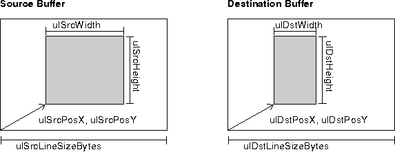
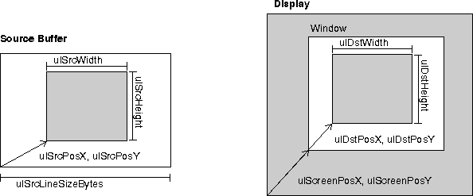

The following illustrates buffer-to-buffer transfer using DiveBlitImage. 
The following illustrates buffer-to-screen transfer using DiveBlitImage. 
Note: The screen cannot be used as a source for blitting using DIVE.